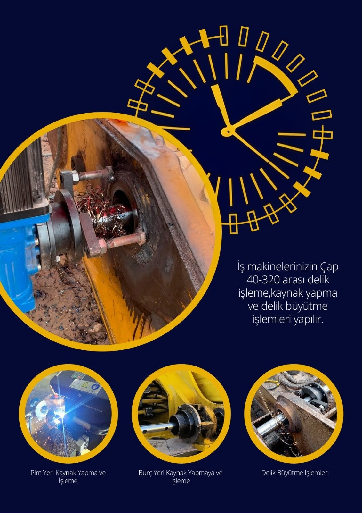
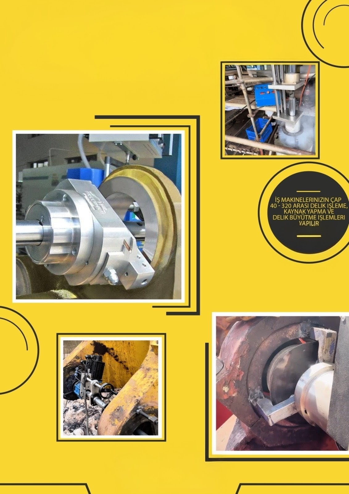
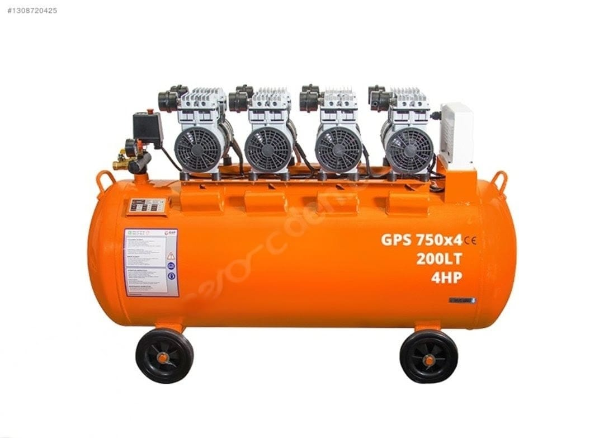
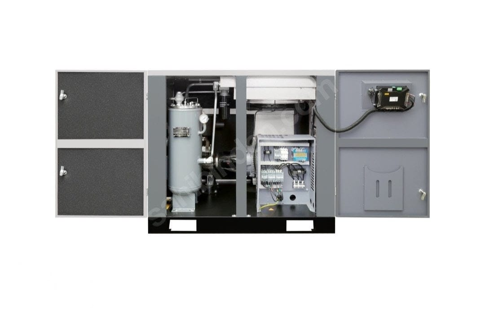
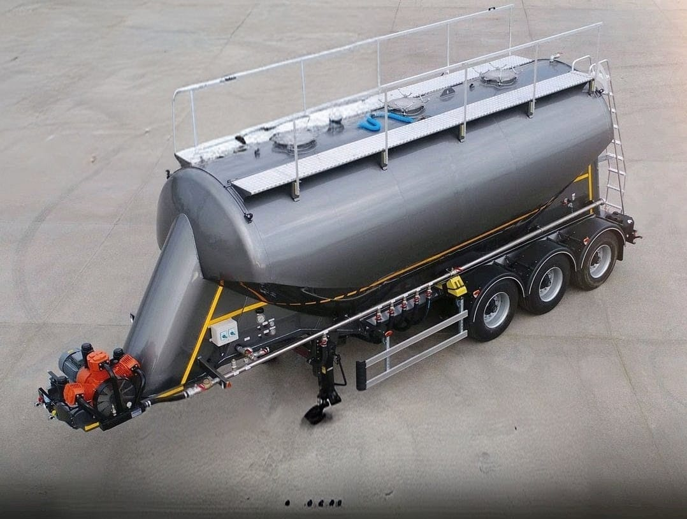
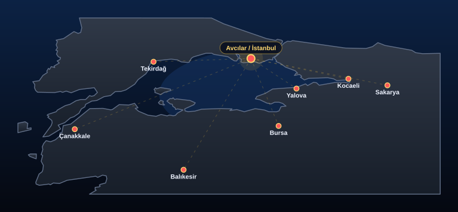
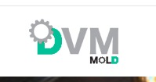
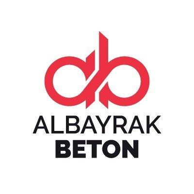
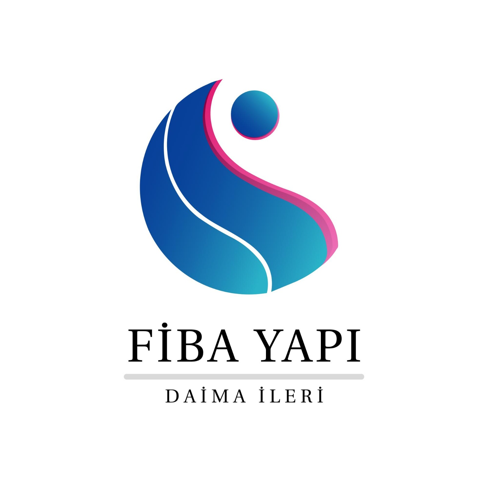
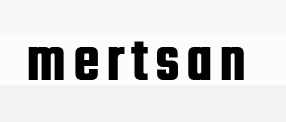

Makinenizi sökmeden yerinde işleme, dolgu kaynağı ve teknik bakım çözümü
Nova Borwerk, ağır sanayi ve iş makinesi ekipmanlarında seyyar borvek, yerinde delik işleme, baralama, pim-burç yatağı revizyonu, dolgu kaynağı, bom delik işleme, ekskavatör kova ve kol tamiri hizmeti sunar. Ayrıca pistonlu kompresör, vidalı kompresör ve silobas yüksek basınç kompresör bakım, tamir ve onarım hizmetlerini sahada sağlamaktadır. Şantiyeye, limana, tersaneye veya fabrika sahasına gider; atölye hassasiyetini doğrudan işin olduğu noktaya taşır.
Ağır sanayi sahalarında hızlı, güvenli ve ölçüye sadık çözüm
Ustalık, saha pratiği ve mobil ekipman gücünü aynı yapıda topluyoruz. Liman işletmeleri, tersaneler, iş makinesi sahaları ve büyük fabrika hatlarında, söküm ve nakliye süresini ortadan kaldıran yerinde müdahale modeli ile çalışıyoruz.
Yerinde Müdahale
Parçayı atölyeye taşıma ihtiyacını azaltır; süre, maliyet ve operasyon kaybını minimumda tutar.
Pim ve Burç Yatakları
Kulak, bom, bağlantı ve şase bölgelerindeki aşınmış delikler yeniden işlenir, genişletilir veya kaynatılıp revize edilir.
Kurumsal Uygunluk
Yüksek riskli çalışma alanlarına girişte talep edilen ustalık, işaretçi-sapancı, AutoCAD ve vinç operatörlüğü belgeleri mevcuttur.
Teknik Disiplin
Ölçü kontrol, kalite kontrol, teknik resim okuma ve sahada hizalama ile sonuç odaklı uygulama yapılır.
İş makineleri, liman ekipmanları ve fabrika hatları için mobil teknik çözümler
Sahaya götürdüğümüz mobil borwerk sistemiyle; seyyar borvek, yerinde delik işleme, baralama, pim-burç yuvası yenileme, bom delik işleme, ekskavatör kova ve kol tamiri, ahtapot perno delikleri revizyonu, perno-pim-burç yuvası işleme, özel diş ve somun tedarik / imalat çözümleri tek yapı altında yönetilir. Ayrıca pistonlu kompresör, vidalı kompresör ve silobas yüksek basınç kompresör bakım, tamir ve onarım hizmetleri de sağlanmaktadır.
Operasyon Kapsamı
- Q40 - Q320 arası hassas yerinde delik işleme ve profesyonel dolgu kaynağı
- Seyyar Borvek ile bom delik işleme, baralama ve revizyon uygulamaları
- Ekskavatör kova, kol, bom, pim ve burç yataklarında saha onarımı
- Perno / Pim / Burç yuvalarında revizyon, genişletme ve tekrar ölçüye getirme
- Özel Diş / Somun tedarik ve imalat çözümleri
- Kompresör bakım, tamir ve onarım hizmetleri
Neden Sahada Yapıyoruz?
- Aşınma riski kule vinç, bom, mafsal ve ekskavatör bağlantı bölgelerinde delikler zamanla ovallaşabilir.
- Yerinde onarım büyük ve ağır parçaları depoya taşımadan borvek ve bakım revizyonu yapma imkânı sunar.
- Hizalama ve baralama işlemleri, parçaların tekrar tam oturmasını sağlar.
- Kompresör servisi ile pistonlu, vidalı ve yüksek basınçlı sistemlerde duruş süreleri azaltılır.
- Kurumsal sahalar için belge sunumu ve teknik teklif dosyası hızlıca hazırlanır.
Teknik yetkinlik
Sertifikalar; mobil bakım, mekanik onarım, işaretçi-sapancı eğitimi, AutoCAD geliştirme ve köprülü vinç operatörlüğü alanlarında resmi belge altyapısını temsil eder. Talep halinde teklif dosyasına eklenebilir.
Ustalık Belgesi
Makine Teknolojisi / Makine Bakım Onarım alanında düzenlenmiş resmi ustalık belgesi.
Makine Bakım Onarım meslek dalı için 01.07.2021 tarihli ustalık belgesine dayalı uzmanlık.
Belgeyi aç →İşaretçi ve Sapancı Eğitimi
Tehlikeli ve Çok Tehlikeli İşlerde İşaretçi ve Sapancı Eğitimi.
Yük kaldırma, yönlendirme ve sapanlama gerektiren saha operasyonlarında güvenli çalışma altyapısı.
Belgeyi aç →AutoCAD Geliştirme ve Uyum Eğitimi
Bilgisayar Destekli 2 Boyutlu Çizim - AutoCAD eğitimi.
Teknik çizim okuma ve ölçülendirmeyi sahadaki mekanik uygulamayla birleştiren çizim altyapısı.
Belgeyi aç →Vinç Operatörlüğü Belgesi
Kaldırma Taşıma Raylı Sistem Köprülü Vinci Operatörü Yetiştirme Kursu.
Köprülü vinç altyapısı, uzak kumandalı vinç deneyimi ve yüksek riskli sahalara uyum.
Belgeyi aç →Sahadan gerçek işler: delik büyütme, pim yatağı yenileme, burç ve kaynak revizyonu
Aşağıdaki görseller, mobil borwerk uygulamalarının sahadaki gerçek örneklerini gösterir. Sarı ve lacivert kurumsal dil korunarak, yapılan işlerin açık şekilde sergilenmesi için seçildi.

Yerinde Delik İşleme ve Kaynak Revizyonu
Q40 - Q320 aralığındaki delik işleme, pim yatağı kaynak dolgusu, burç yeri hazırlama ve delik büyütme işlemleri tek sahada yönetilir.

Hassas Mekanik İşleme
Ölçüye uygun işleme, mobil sistem kurulumu ve parça hizalama süreçleri görsel olarak sunulur.
Saha Notu
Büyük ve ağır parçalar için atölye taşımak yerine sahada in-situ işlem yapılması; kule vinç, iş makinesi ve fabrika hattı gibi kritik sistemlerde duruş süresini azaltır ve maliyet avantajı sağlar.
Pistonlu, vidalı ve silobas yüksek basınç kompresör bakım, tamir ve onarım hizmetleri
Nova Borwerk yalnızca seyyar borvek ve yerinde delik işleme alanında değil; aynı zamanda pistonlu kompresör, vidalı kompresör ve silobas yüksek basınç kompresör sistemlerinde bakım, tamir ve onarım hizmetleri de sunmaktadır. Endüstriyel tesisler, beton santralleri ve saha ekipmanları için yerinde çözüm sağlanır.

Pistonlu Kompresör Hizmetleri
Pistonlu kompresör sistemlerinde arıza tespiti, bakım, revizyon ve onarım hizmetleri sağlanmaktadır.

Vidalı Kompresör Servisi
Vidalı kompresörlerde performans kontrolü, bakım, tamir ve sahada servis desteği sunuyoruz.

Silobas Yüksek Basınç Kompresör
Silobas ve yüksek basınç kompresör sistemlerinde profesyonel bakım, tamir ve onarım hizmetleri verilmektedir.
Yıllara yayılan tecrübeyi sahaya taşıyan teknik arka plan
Demir&Çelik sektöründe geçirilen 35 yıllık tecrübe.
Oksijenle metal kesicilik ve eleme tesisi bakım işleri ile başlayan ilk ağır sanayi pratiği.
Tesviye operatörlüğü, universal torna-freze, ölçü kontrol, kalite kontrol, CNC freze ve uzaktan kumandalı vinç operatörlüğü.
Teknik resim okuma, ölçü aletleri kullanımı, AutoCAD 2D çizim, G kodları ile CNC programlama ve yüzeysel taşlama bilgisi.
Ustalık belgesi, işaretçi-sapancı eğitimi, vinç operatörlüğü ve bakım-onarım altyapısı ile kurumsal sahalara uygun operasyon.
Marmara Bölgesi genelinde mobil saha erişimi
Avcılar merkezli mobil ekip ile Marmara'nın tamamına yerinde teknik servis.

Bizleri tercih etmiş firmalar
Hizmet sağladığımız ve işlem sağladığımız firmalar

DVM Mold
Çelik fabrikası

Albayrak Beton
Beton ve saha ekipmanları referansı

Fiba Yapı
Yapı ve saha çözümleri referansı

Mertsan Hurda Geri Dönüşüm Tesisi
Hurda geri dönüşüm tesisi referansı
Kompresör bakımı ve servis hakkında
Organik aramalarda en çok sorulan konuların kısa yanıtları. Tüm sorular için SSS sayfasına bakın.
Pistonlu kompresör bakımı nasıl yapılır?
Her kullanım sonrası depo altındaki kondens vanasını boşaltın. Haftalık yağ seviyesini kontrol edin; filtre tıkanıklığı varsa temizleyin veya değiştirin. 500–1000 saatte yağ değişimi, yılda bir emniyet supabı kontrolü önerilir. Nova Borwerk Marmara Bölgesi'nde yerinde bakım ve servis sunar.
Vidalı kompresör mü pistonlu kompresör mü tercih edilmeli?
Sürekli ve yüksek hava tüketiminde vidalı kompresörler (GPV serisi) daha verimli ve sessizdir. Ara ara kullanım, küçük atölyeler ve düşük bütçede pistonlu GP modelleri yeterli olur.
Kompresör basıncı düşükse ne yapmalıyım?
Hava kaçağı, kirli filtre, yanlış basınç ayarı veya aşınmış piston/sekman basıncı düşürür. Önce filtre ve kondens hattını kontrol edin; sorun devam ederse servis çağırın.
Hava kurutucu neden gerekli?
Basınçlı hava hattındaki nem, boya hatlarında su damlası, pnömatik aletlerde korozyon ve filtre tıkanmasına yol açar. GPDK / GPAC kurutucular nem oranını düşürerek hat kalitesini korur.
Nova Borwerk hangi bölgelere servis veriyor?
Merkez Avcılar / İstanbul olmak üzere İstanbul, Kocaeli, Bursa, Tekirdağ, Yalova, Sakarya, Balıkesir, Çanakkale, Edirne, Kırklareli ve Bilecik illerini kapsayan Marmara Bölgesi'ne mobil servis veriyoruz.
Kompresör yağı ne sıklıkla değiştirilmeli?
Kullanım yoğunluğuna göre 500–1000 çalışma saatinde bir yağ değişimi önerilir. Yağ rengi koyulaştıysa veya emülsiyon oluştuysa vakit beklemeden değiştirin.
Ürün teklifi nasıl alabilirim?
WhatsApp (+90 536 712 82 57), telefon veya novaborwerk@gmail.com üzerinden model adını ve kullanım amacınızı iletmeniz yeterli; teknik ekibimiz aynı gün dönüş yapar.
Seyyar borwerk (yerinde delik işleme) hizmeti veriyor musunuz?
Evet. Kalıp, makine ve ağır ekipmanlarda mobil borwerk ile yerinde delik işleme, pim-burç revizyonu ve dolgu kaynağı hizmetleri sunuyoruz.
Sahaya gelmemizi istiyorsanız doğrudan ulaşın
Delik işleme, dolgu kaynağı, pim-burç revizyonu, kurumsal teklif veya belge paylaşımı için bizimle hemen iletişime geçebilirsiniz.
Ana saha iletişimi
0536 712 82 57İletişim / yönlendirme
0507 032 88 80Kompresör bakım ve servis iletişimi
0545 285 99 05Kurumsal dosya ve teklif gönderimi
novaborwerk@gmail.comNot: Talep halinde İSG belgeleri, vinç operatörlüğü belgesi ve ustalık belgesi teklif formuna eklenerek paylaşılabilir.